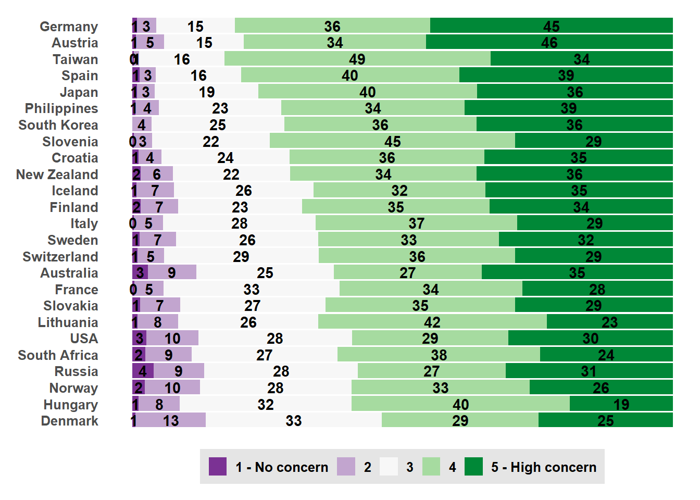

library(haven) # For working with SPSS datafiles
library(sjlabelled) # To remove labels from SPSS datafiles
library(tidyverse) # For so muchWarning: Paket 'lubridate' wurde unter R Version 4.4.2 erstelltThe International Social Survey Programme (ISSP) is a cross-national programme conducting annual surveys on diverse topics like:
The survey programme was established in 1984 by the founding members Australia, Germany, Great Britain, and the US. Currently, the ISSP has 44 member countries. Since its foundation, over one million respondents have participated in the surveys of the ISSP. All datasets are publicly available and free of charge.
For this case study, we are working with the cumulation of the environment module of the ISSP, which integrates the four existing survey rounds on the environment (1993, 2000, 2010, and 2020). For this tutorial, we are interested in the role of long-term climate change patterns and how they might affect environmental attitudes on the country-level.
For loading and wrangling with the data, we need some packages. Keep in mind to install (install.packages()) those packages first before loading with the library-function.
library(haven) # For working with SPSS datafiles
library(sjlabelled) # To remove labels from SPSS datafiles
library(tidyverse) # For so muchWarning: Paket 'lubridate' wurde unter R Version 4.4.2 erstelltWe are loading the SPSS-file and directly remove all labels.
issp <- haven::read_spss("./data/ZA8793_v1-0-0.sav") |>
sjlabelled::remove_all_labels()Let’s reduce and clean the dataset. We want to investigate the relationship between the experience of extreme heat and climate change concern. Let’s subset to those variables which are necessary for this analysis and rename directly.
issp <- issp |>
select(
year,
country,
concern = v42
)We can check out the documentation to identify the country names for the numeric values in the dataset. Let’s label it. We will also combine responses from Northern Ireland and Great Britain into “United Kingdom” and store it in a new variable.
issp <- issp |>
mutate(
country = factor(country, levels=c(36, 40, 100, 124, 152, 158, 191, 203,
208, 246, 250, 276, 348, 352, 372, 376,
380, 392, 410, 428, 440, 484, 528, 554,
578, 608, 620, 643, 703, 705, 710, 724,
752, 756, 826, 840, 82602),
labels=c("Australia", "Austria", "Bulgaria", "Canada",
"Chile", "Taiwan", "Croatia", "Czechia",
"Denmark", "Finland", "France", "Germany",
"Hungary", "Iceland", "Ireland", "Israel",
"Italy", "Japan", "South Korea", "Latvia",
"Lithuania", "Mexico", "Netherlands",
"New Zealand", "Norway", "Philippines",
"Portugal", "Russia", "Slovakia",
"Slovenia", "South Africa", "Spain", "Sweden",
"Switzerland", "Great Britain",
"United States of America",
"Northern Ireland"))
)
issp <- issp |>
mutate(
country_new = case_when(
country == "Great Britain" | country == "Northern Ireland" ~ "United Kingdom",
TRUE ~ country
),
.after = country
)Let’s also reverse the concern-scale so that higher values indicate higher concern.
issp <- issp |>
mutate(
concern = case_match(concern,
1 ~ 5,
2 ~ 4,
3 ~ 3,
4 ~ 2,
5 ~ 1)
)The dataset is set for linking with our temperature data.
head(issp) year country country_new concern
1 1993 Australia Australia 4
2 1993 Australia Australia 4
3 1993 Australia Australia 5
4 1993 Australia Australia 3
5 1993 Australia Australia 3
6 1993 Australia Australia 3Let’s explore the distribution of climate concern across countries for the 2020 wave.
# Define Likert-theme
likert_theme <- theme_gray() +
theme(text = element_text(size = 12, face = "bold"),
plot.title = element_text(size = 13, face = "bold",
margin = margin(10, 0, 10, 0)),
plot.margin = unit(c(.4,0,.4,.4), "cm"),
plot.subtitle = element_text(face = "italic"),
legend.title = element_blank(),
legend.key.size = unit(1, "line"),
legend.background = element_rect(fill = "grey90"),
panel.grid = element_blank(),
axis.text.x = element_blank(),
axis.ticks = element_blank(),
axis.title = element_blank(),
panel.background = element_blank(),
strip.text = element_text(size = 12, face = "bold"))
# Let's look at 2020 only
issp_2020 <- issp |>
filter(year == "2020")
# calculate averages across countries
issp_2020_averages <- issp_2020 |>
group_by(country_new) |>
summarise(median_concern = round(median(concern, na.rm=TRUE), digits=2),
mean_concern = round(mean(concern, na.rm=TRUE), digits=2))
# Plot
issp_2020 |>
filter(!is.na(concern)) |>
mutate(country_new = forcats::fct_reorder(country_new, concern,
.fun=mean, .desc=FALSE)) |>
arrange(country_new) |>
group_by(country_new, concern) |>
summarize(count = n()) |>
group_by(country_new) |>
mutate(prop_value = count / sum(count)) |>
ggplot() +
geom_bar(mapping = aes(x = country_new,
y = prop_value,
fill = forcats::fct_rev(factor(concern))),
position = "fill",
stat = "identity")+
geom_text(aes(x = country_new, y = prop_value, label = round(100*prop_value)),
position = position_stack(vjust = 0.5),
fontface = "bold") +
geom_text(data = issp_2020_averages,
aes(x = country_new, y=1.1, label=paste("(", median_concern, "/",
mean_concern, ")")),
fontface="bold", colour="black", check_overlap=TRUE) +
scale_fill_brewer(type = "div", palette = "PRGn", direction = -1,
labels = c("5 - High concern", "4", "3", "2", "1 - No concern")) +
coord_flip() +
likert_theme +
theme(legend.position = "bottom") +
guides(fill = guide_legend(reverse = TRUE, nrow =1))
tba